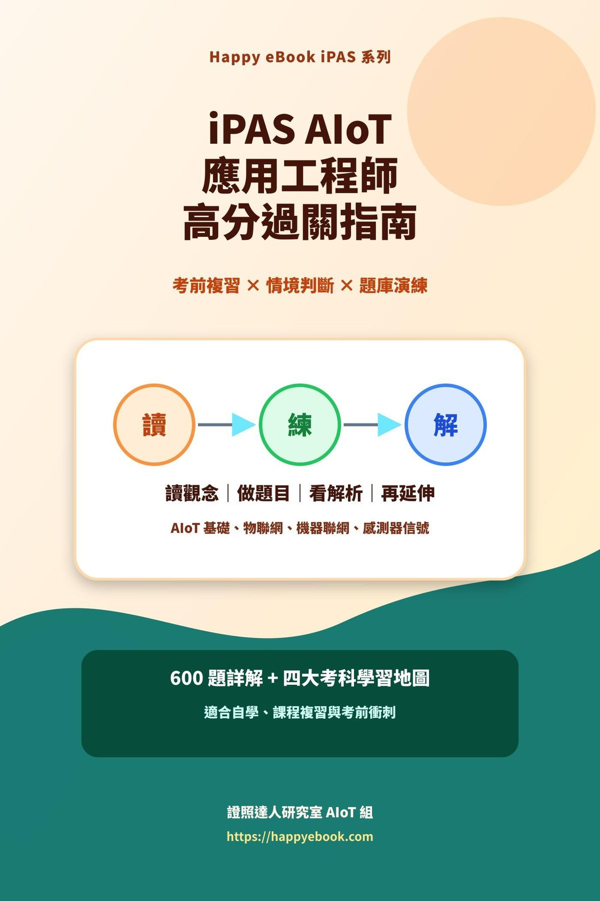

電子書
iPAS AIoT 應用工程師高分過關指南
這不是一本只整理考古題的書，而是一本為 iPAS AIoT 應用工程師考試與 AIoT 實務入門設計的完整學習指南

iPAS AIoT 應用工程師高分過關指南
這不是一本只整理考古題的書，而是一本為 iPAS AIoT 應用工程師考試與 AIoT 實務入門設計的完整學習指南
這不是一本只整理考古題的書，而是一本為 iPAS AIoT 應用工程師考試與 AIoT 實務入門設計的完整學習指南。 本書延續 Happy eBook iPAS 系列特色，使用「觀念理解、情境判斷、類似題延伸、實作應用」的方式，帶讀者從 AIoT 基礎、感測器、通訊協定、邊緣運算、AI 模型、電腦視覺、NLP、系統架構、雲端平台、資料分析、資安，到智慧工廠、智慧醫療、智慧城市與智慧農業案例，逐步建立可應考、也可實作的知識架構。 第一版以四大考科學習地圖、600 題四大考科練習與詳解、7 天 / 14 天 / 18 小時讀書路線為核心。題庫包含章節補強題、機器聯網與感測器信號調節補強題、考前綜合模擬題與跨考科情境整合題，並採保守定位：這些題目是原創練習題，不宣稱來自官方來源、考題預測或結果承諾。後續仍可擴充更多實作案例、iPAS AI Daily 每日複習與 18 小時課程，形成「教材＋每日複習＋題庫＋課程」的完整學習體系。 四大考科對應# 本書第一版依使用者提供的考科資訊規劃學習地圖： 【考科一-學科】AIoT基礎概論 【考科二-學科】物聯網系統與應用 【考科三-術科】機器聯網基礎應用實作